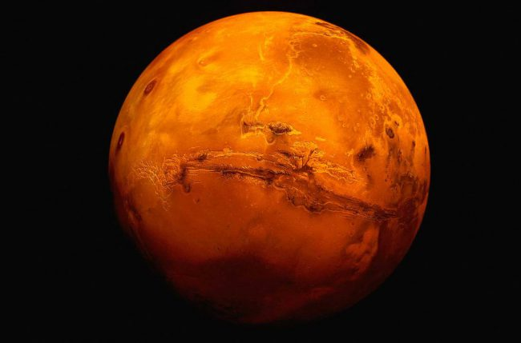
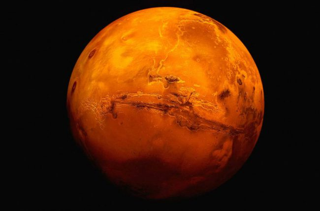

Марс четвертая планета от Солнца и последняя из планет земной группы. Как и остальные планеты в Солнечной системе (не считая Земли) Марс назван в честь мифологической фигуры — римского бога войны. В дополнение к его официальному названию Марс иногда называют Красной планетой, что связано с коричнево-красным цветом его поверхности. При всем этом Марс является второй самой маленькой планетой в Солнечной системе после Меркурия.В течение практически всего девятнадцатого века считалось, что на Марсе существует жизнь. Причина такой веры заключается частично в ошибке, а частично в человеческом воображении. В 1877 году астроном Джованни Скиапарелли смог наблюдать то, что, по его мнению, было прямыми линиями на поверхности Марса. Подобно другим астрономам, когда он заметил эти полосы, то предположил, что подобная прямота связана с существованием на планете разумной жизни. Популярной в то время версией о природе этих линий было предположение о том, что это были оросительные каналы. Тем не менее, с развитием более мощных телескопов в начале двадцатого века астрономы смогли увидеть марсианскую поверхность более четко и определить, что эти прямые линии были всего лишь оптической иллюзией. В результате все более ранние предположения о жизни на Марсе остались без доказательств. Большое количество научной фантастики написанной в течение двадцатого века было прямым следствием убеждения, что на Марсе существует жизнь. Начиная от небольших зеленых человечков, заканчивая рослыми захватчиками с лазерным оружием, марсиане были в центре внимания многих теле- и радиопрограмм, комиксов, фильмов и романов. Не смотря на то, что открытие марсианской жизни в восемнадцатом веке в результате оказалось ложным, Марс оставался для научных кругов наиболее дружелюбной для жизни (не считая Земли) планетой в Солнечной системе. Последующие планетарные миссии были без сомнения посвящены поиску хоть какой-либо формы жизни на Марсе. Так миссия под названием Viking, осуществленная в 1970-е годы, проводила эксперименты на марсианской почве в надежде обнаружить в ней именно микроорганизмов. В то время считалось, что образование соединений в ходе экспериментов может быть результатом биологических агентов, однако позже было установлено, что соединения химических элементов могут быть созданы и без биологических процессов.